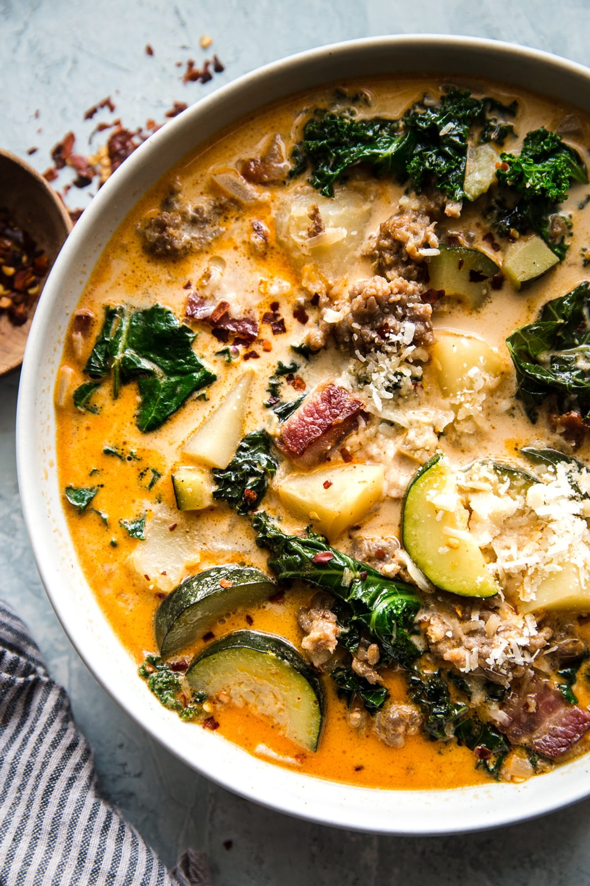

Zuppa Toscana

Description
This recipe shows you how to make a tasty Zuppa Toscana Soup
Ingredients
- 6 oz bacon,chopped
- 1 lb Italian Sausage, The "Hot" variety
- 1 medium head garlic, 10 large cloves, peeled and minced or pressed
- 1 medium onion, finely diced
- 4 cups chicken broth/stock, (32oz)
- 6 cups water, (48 oz)
- 5 medium russet potatoes, peeled and chopped into 1/4" thick pieces
- 1 kale bundle, leaves stripped and chopped (6 cups)
- 1 cup whipping cream
- Salt and black pepper to taste
- Parmesan cheese to serve, optional
Steps
- In a large pot or dutch oven (5.5 qt), over medium-high heat, add chopped bacon and sauté until browned (5-7 mins). Remove bacon to a paper-towel lined plate and spoon out excess oil, leaving about 1 Tbsp oil in the pot.
- Add Italian sausage, breaking it up with your spatula and sauté until cooked through (5 min). Remove to paper towel lined plate.
- Finely dice onion and add to the pot. Saute 5 min or until soft and golden then add minced garlic and saute 1 min.
- Add 4 cups broth and 6 cups water, and bring to boil. Add sliced potatoes and cook 13-14 min or until easily pierced with a fork.
- When potatoes nearly done, add chopped kale and cooked sausage and bring everything to a light boil.
- Stir in 1 cup cream and bring to boil. Season to taste with salt and black pepper then remove from heat. Garnish with bacon and grated parmesan.